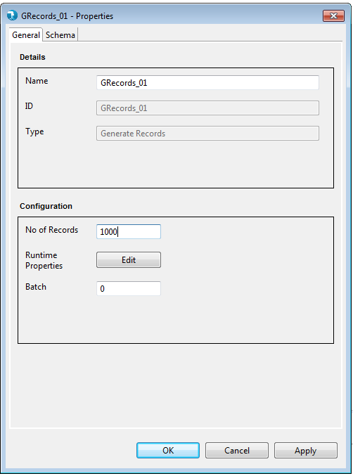
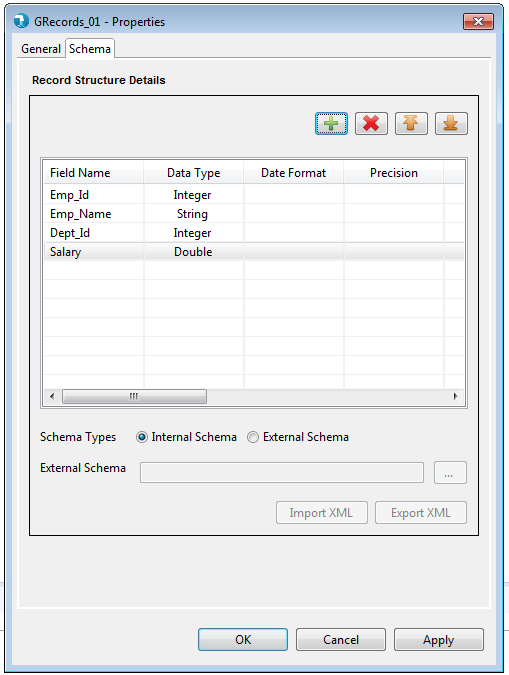
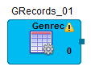
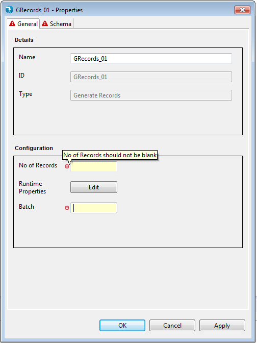
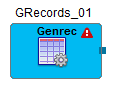

Properties for the Generate Records component can be viewed by Double click->component on canvas. The properties contains the 'General' tab and the Schema tab. It falls under the Input category in the component palette.
General Properties:

Display
- Name - The identifier for the component. This is a mandatory property. This property is pre-populated with the component name, i.e. 'GRecords' followed by an incremental number. It can be changed to any custom name. The name property has following restrictions:
- Must be specified and should not be blank.
- Must be unique across the job.
- Accepts only alphabets (a-z), numerals (0-9) and 4 special characters: "_", "-", ",", " " (space)<./span>
- ID - ID field will specify unique id for every component.
- Type - Type defines the type of component within the category. This typically is the name of the component. This is a non editable field.
Configuration
Schema tab:

Schema Types
- Internal - User is provided a Grid to enter the internal schema of the Output Delimited file.
- Field Name - User needs to enter all the Field names in this column
- Data type - By default "string" Data type has been selected for any field added to the Grid. User can select from different Data type values like "integer", "double", "float" etc.
- Date Format - The format for date data type. Refer to Date formats page for acceptable date formats.
- Precision - Precision for a bigdecimal field can be specified here.
- Scale - Scale for a double, float or bigdecimal field can be specified here.
- Scale Type - Scale Type accepts values as implicit or explicit for bigdecimal field and none for other data types. Explicit considers the length of ' . ' and implicit ignores length of ' . ' for the bigdecimal field.
- Field Description - User can specify field description.
- Length - Length denotes the maximum number of characters that a particular Output field may contain.
- Range From - Range To - User can generate the records in the specified range.
- Default Value - User can specify the default value for the specified field.
- External - User can provide an external Hydrograph Schema file of XML format. A text box is provided to either manually type or use the Browse button to select the schema file from File system. The External schema file path is resolved during run time and replaced with the contents of the file in the Job XML.
The generate records component applies validations to the mandatory fields as described above. Upon placing the generate records component on job canvas for the first time (from component palette), the component shows up a warning icon as mandatory properties are not provided.

The properties window also displays error icon on mandatory fields if it has an incorrect value. The error icon is displayed on the tab as well, if any of the field within the tab has some error.

If the properties window has some error even after user visit's it once, then the warning icon on the aggregate component on the job canvas changes to error icon. This error icon is removed only when all the mandatory fields are supplied with correct values.
